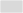
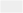
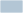
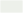
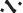

Bodenbedeckung
 | Gebäude |
 | Strasse, Trottoir, Verkehrsinsel |
 | Bahn |
 | Gewässer |
 | Wald |
Übrige Bodenbedeckung |
AV ZH Mask
Gemeindegrenze
 | Gemeindegrenze |
Bodenbedeckung
 | Gebäude |
| Strasse, Trottoir, Verkehrsinsel |
 | Bahn |
 | Gewässer |
 | Wald |
Übrige Bodenbedeckung |
DTM Relief ZH